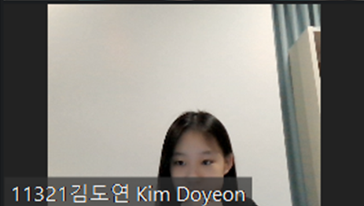
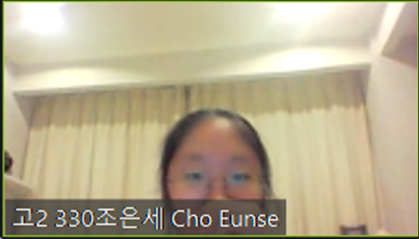
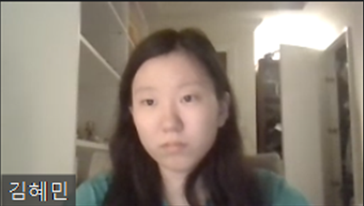

안녕하세요!
저희는 JIKS의 그룹 프로젝트 동아리, BIOBYTE입니다.
이 그룹은 생명에 관심있는 학생과 컴퓨터에 관심이 있는 학생이 모여 만들어졌습니다.
(이 동아리의 이름도 생명을 뜻하는 접두사 BIO와 이진수 8자리를 뜻하는 BYTE를 합쳐서 BIOBYTE가 되었습니다!)
저희는 매주 모여 유전에 대해 조사하고, 보고서를 제작하였습니다. 그 뒤로는 역할을 나눠 포스터 제작과 웹사이트 제작을 맡았죠.
모임에는 총 3명의 그룹원이 있습니다.
조장 김도연
조장으로서 선생님에게 필요하면 질문을 하거나, 제출하는 역할을 맡았습니다.
그 외에 보고서를 작성하거나 포스터를 제작했습니다.
조원 조은세
보고서 작성 및 포스터 제작을 맡았습니다.
조원 김혜민
보고서 작성을 하고 이 웹사이트를 제작했습니다.
(지금 이 웹페이지에 내용을 작성하는 사람이죠...)